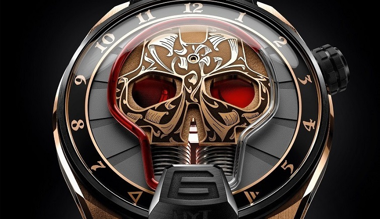
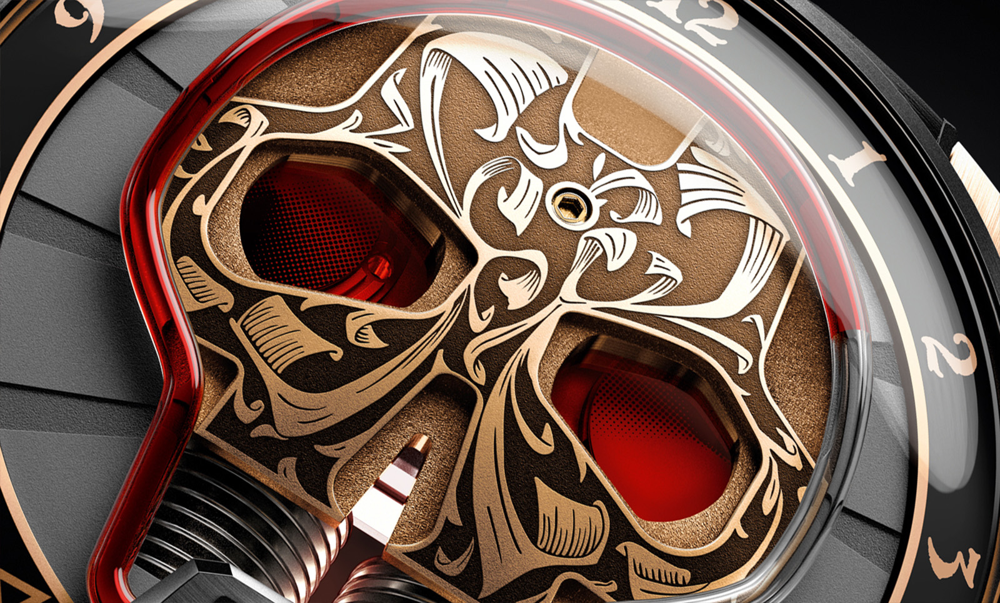

HYT Skull Maori Watch

In January this year, HYT launched the Skull series that bring the design and
engineering capabilities of the company to a new level.
Despite dispensing the minute indicator which was available in their previous models,
the design specification now requires a thin capillary tube which carries the
liquid to follow the shape of the skull on the dial instead of on a circular track.
As the liquid is no longer moving on a consistent path but on a track that has corners
and turns, the ability to control the movement to coincide with the hour markers around the dial is a daunting task.
Nevertheless,
this is something that HYT was able to achieve quite spectacularly.
The Skull Maori is the fourth core group in the series (there was the Green Skull,
the Red Skull and the precious jewel versions).
What is distinctive is the use of traditional hand engraving of customary Maori tattoos.
Even the Arabic hour markers use a font reminiscence of the style of engraving.
The engraving does not stop there but continues on to the tan leather band strap.

Some key designs features worth mentioning are the bellows and
the methods HYT use to help indicate the seconds and power remaining in the watch.
The bellows that are visible through the jaw of the skull is the mechanism that
causes the fluid to move by the continuous act of expansion and contraction.
The right eye indicates the power reserve of the watch.
The eye gradually darkens as the piece nears the end of its 65 hours of power.
The left eye hides a barely visible seconds dial which rotates continuously.
From a dimension perspective, this is a big watch.
The casing is 51 mm case wide with a single assembly push-button of the crown,
which adjusts the time, located at the North-East corner of the watch.
Coupled with a thickness of 17.9 mm, this watch definitely has wrist presence.
The casing is made out of red gold and
titanium while the pin buckle is made out of titanium.
The dial is protected by a sapphire crystal and
the whole casing is water pressure rated to 5 ATM or 165 feet.